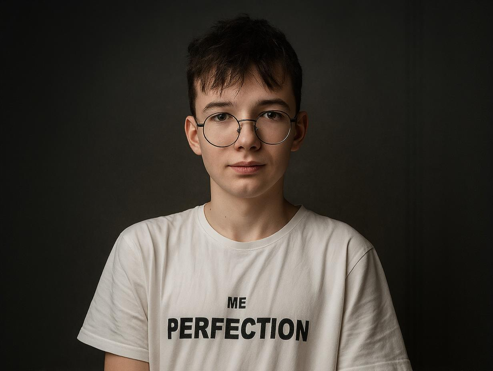

Про мене
Мене звати Артем, мені 13 років, і я вже понад три роки навчаюся у Школі Комп’ютерної Майстерності, де активно розвиваю навички у веб-розробці. Я маю практичний досвід роботи з HTML та CSS, володію технікою блокової верстки, розумію принципи семантичної розмітки й побудови DOM-дерева. Використовую інструменти Google Workspace для ефективної організації навчання й роботи. Планую вивчати JavaScript і цікавлюся створенням інтерактивних веб-сторінок. У своїх проєктах дотримуюсь етичних принципів: не копіюю чужий код без дозволу, дбаю про зручність і доступність інтерфейсу для користувача. Окрім технічної сфери, я прагну гармонійного розвитку: займаюся карате, що виховує дисципліну, самоконтроль і цілеспрямованість. Вважаю важливим не лише розвивати hard skills, а й формувати soft skills — відповідальність, уважність, вміння працювати в команді та вчитися на помилках. У вільний час вдосконалюю власні проєкти, дивлюсь навчальні відео й відпочиваю для відновлення ресурсу. У майбутньому планую поглибити знання у frontend-розробці, вивчити сучасні фреймворки та створювати сайти, які будуть корисними, красивими та етичними.

Мої скілли
Hard скілли
- HTML — створення семантичної структури вебсторінок
- CSS — стилізація елементів, позиціонування, Flexbox, адаптивна верстка
- DOM (Document Object Model) — розуміння структури вебдокументу, базова робота з елементами
- Робота з макетами — базові навички розмітки за зразком (наприклад, макет «Sedona»)
- Командна розробка — участь у спільних проєктах, розподіл обов’язків, обговорення ідей
Soft скілли
- Вміння працювати в команді — маю досвід участі у спільних проєктах, вмію слухати і пропонувати ідеї
- Наполегливість — доводжу проєкти до кінця, навіть коли виникають труднощі
- Бажання навчатися — постійно вдосконалюю свої навички та цікавлюсь новими технологіями
Мої роботи
Седона
Цей проєкт був навчальним завданням, у якому потрібно було відтворити макет сайту туристичного міста Sedona. Хоча проєкт не такий масштабний, як «Я в майбутньому», він вимагав уважності до деталей і знання основ верстки. Під час роботи ми стикалися з труднощами: було складно правильно розмістити блоки, дотримуючись структури дизайну, а також налаштувати дрібні елементи, щоб сайт виглядав згідно з оригіналом. Цей досвід навчив мене точності, акуратності та уважності до піксельної відповідності. У результаті ми успішно завершили проєкт, створивши адаптивну верстку з використанням HTML і CSS. Завдяки «Sedona» я краще зрозумів, як працювати з реальними макетами та розвивати свої навички у веброзробці.
Я в майбутньому
Цей проєкт був реалізований у командній роботі з метою перевірки та закріплення знань, які ми здобували протягом навчання у Школі комп’ютерної майстерності. Основна ідея проєкту — представити наше бачення світу майбутнього, враховуючи сучасні глобальні проблеми та технологічний прогрес. У рамках проєкту ми створили віртуальні "світи майбутнього", в яких показали, яким, на нашу думку, може бути життя через десятки років. Ми дослідили актуальні виклики сучасності, спрогнозували майбутні професії, а також проаналізували вплив кінофільмів на наше уявлення про технології та суспільство майбутнього. Проєкт став важливим кроком у розвитку наших командних і технічних навичок.
Творчий Проєкт
Цей проєкт був виконаний не в командній роботі, кожний учень мав зробити ідею для свого проекту і його дизайн, мій проєкт був один з найважкіших, цей проєкт був менче ніж "Я в майбутньому" але через те що це було виконано без команди а тількі одна людина робила свій проєкт, це було дуже важко і часозатратно. У рамках цього проєкту ми зробили свій сайт якій хочем і зробили повністью самі дизайн і вміст сайту якій будемо презентувати батькам.
Годинники
Цей проєкт був навчальним завданням, у якому ми робили веб-сторінку магазина годинників. Цей проєкт допомогав нам закріпити знання Flexbox і допоміг нам краще зрозуміти структуру Flexbox. У багатьох виникали труднощі, через те що веб-сторінка мала багато маленьких деталів, через що було дуже важко зробити точь в точь, завжди виникала десь помилка. В результаті, ми успішно виконали це завдання і краще дізнались як працювати зі Flexbox елементами.